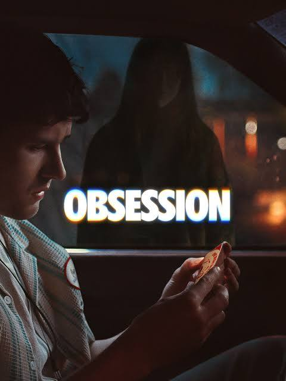

Obsession
Year: 2026 • Genre: Horror
Curry Barker's Obsession takes the familiar "be careful what you wish for" premise and turns it into a creepy, unsettling, and at times genuinely uncomfortable horror experience, elevated by strong performances and an intriguing supernatural concept.
Review
Date Watched: August 18, 2026
Where Watched: Peacock
Adaptation? No
Quick Hook (First Impression)
We've all heard the old saying: Be careful what you wish for, because it may just come true. It's an old saying that has been used numerous times in shows and movies throughout the years. Some have been very good, while others have not been so good. Curry Barker decided to add another film to that familiar tagline with Obsession, a horror movie that has already been labeled as one of the best horror movies of the year.
While the movie doesn't necessarily add anything completely new to the idea of being careful what you wish for, it is definitely one of the creepiest and most unsettling versions of that familiar premise.
Story / Concept
The plot is simple: Bear is a shy, lonely man who has a crush on his co-worker, Nikki Freeman. He uses a One Wish Willow to wish for Nikki to love him more than anybody in the world. Lo and behold, the wish works, and they are now a couple. However, Bear soon realizes that he may have made a mistake with his wish and begins to see a much more sinister side to the love he wanted so badly.
I mentioned that the story is another "Be careful what you wish for" story, and while it is simple, Barker does a very good job at making a familiar story intriguing while also making me wince at certain scenes. The movie doesn't need an overly complicated plot to work. Instead, it takes a straightforward idea and shows what can happen when someone's deepest desire is taken to an extreme.
I also enjoyed the idea of the One Wish Willow. You open it out of its box, wait for the music to stop, say your wish, break the willow, and your wish comes true. I thought that was a really cool concept because it gives the wish a specific ritual instead of simply having a character say something and magically get what they want.
I also liked that the willow knows when you have made a wish and will not allow you to make another wish with a new willow. This makes Bear undoing his wish a lot more difficult. He can't simply find another willow and wish everything back to normal. He has to deal with the consequences of the decision he already made.
Performances
The biggest positive I can say about this film was the performances by Michael Johnston and Inde Navarrette, who played Bear and Nikki respectively.
Inde's portrayal was easily the star of the show, with her ability to go from being a normal, beautiful woman to screaming, crying, and absolute craziness in a snap of the fingers. There are moments where Nikki feels completely normal, and then her behavior suddenly changes into something much more disturbing. That unpredictability made her character incredibly unsettling and helped create some of the best moments in the movie.
Michael Johnston also deserves a lot of credit for his performance as Bear. While one could argue that Bear is the real villain of the film, I still found myself having some sympathy for him. We've all been in his situation where we've wished that our crush would reciprocate the feelings we have for them.
Wanting someone to love you is something most people can understand. The problem is that Bear takes that desire too far by using the One Wish Willow to force Nikki to love him more than anyone else in the world. His wish doesn't simply make Nikki fall in love with him; it essentially makes her a prisoner of that love.
That's what makes Bear such an interesting character because you can understand where he is coming from while also knowing that he brought this situation upon himself. You feel bad for him because his original desire is relatable, but at the same time, you can't help but feel that he had this coming because of the choice he made.
Pacing / Flow
The biggest issue I had with the film was the pacing at the start. The beginning felt a little inconsistent because it moved through the story a bit too quickly instead of going deeper into the characters, especially Bear.
We know that he lives alone, has a crush on Nikki, and that his cat dies in the beginning, but they don't really go into who Bear is outside of those things. I think spending more time with Bear before the wish could have made his character even more relatable.
If we had gotten to know more about his life, his loneliness, and what made him become so obsessed with Nikki, I think the consequences of his wish would have carried even more weight. The movie gives us enough to understand him, but I wanted a little more.
Outside of the slower character development at the beginning, I thought the movie did a good job maintaining its unsettling atmosphere and keeping me interested. I couldn't turn away even during some of the more uncomfortable scenes.
Themes / Meaning
The biggest theme is obviously the idea of being careful what you wish for, but I think Obsession also explores the danger of wanting someone to love you so badly that you stop caring about what they actually want.
Bear's wish is understandable on the surface. He wants the woman he loves to love him back. But instead of allowing that relationship to happen naturally, he uses the One Wish Willow to guarantee that Nikki will love him more than anyone else in the world.
That turns something that should be positive—love—into something disturbing. The movie makes you question whether love can really be considered love when one person has no choice in the matter.
I also wish they went further into the lore of the One Wish Willow. Where did it come from? Why is it turning the wishes sinister? What exactly is granting the wish? Was it an entity or something else? Those are questions I kept thinking about while watching the movie.
If they do plan to make more of these kinds of films, which Curry Barker has expressed interest in doing in the form of an anthology film series, I can understand not going too deeply into the lore here. Leaving some of those questions unanswered could allow future movies to explore different stories involving the One Wish Willow. Still, it would've been nice to learn more about the willow and why it works the way it does.
Final Thoughts
Another positive goes to the lighting and camera work, particularly with Nikki being in the shadows in certain scenes, as well as her movement within those shadows. It added to the creepiness throughout the film and helped keep the tone consistent.
There were several moments where the way Nikki was positioned or moved within the darkness made me uncomfortable before anything even happened. I couldn't turn away, even during some of the more unsettling scenes.
One of those scenes has to do with Bear's cat, which actually plays a constant part in the film. Without getting into spoilers, the cat becomes another way the movie creates discomfort and reminds you that something isn't quite right.
It's one of those elements that makes Obsession feel more unsettling than your typical "be careful what you wish for" story.
Who is this for? Horror fans who enjoy creepy, unsettling movies that take a familiar concept and put a darker spin on it. It's especially worth checking out if you enjoy psychological horror, supernatural concepts, and movies that make you uncomfortable without relying entirely on traditional horror formulas.
Who should skip it? Anyone looking for a more complicated horror story with a lot of mythology and answers about its supernatural elements may be disappointed. The movie leaves several questions about the One Wish Willow unanswered, and the beginning could have spent more time developing Bear's character.
One-Sentence Verdict: Obsession is a fun, creepy, and unsettling horror movie that doesn't reinvent the "be careful what you wish for" concept, but Curry Barker makes the familiar premise work through strong performances from Michael Johnston and Inde Navarrette, an excellent atmosphere, creepy lighting and camera work, and an intriguing One Wish Willow concept, making it one of the movies of the year for me despite its rushed opening, limited character development, and unanswered questions about the willow's lore.
What Worked
- Michael Johnston and Inde Navarrette's performances, with Navarrette especially standing out.
- The creepy lighting, camera work, and use of shadows.
- The unsettling atmosphere and willingness to make the audience uncomfortable.
- The One Wish Willow concept and the rules surrounding it.
- Making Bear both sympathetic and responsible for his own nightmare.
- Taking a familiar "be careful what you wish for" story and making it intriguing.
What Didn't
- The pacing at the beginning felt too quick.
- Bear could have benefited from more character development before making his wish.
- I wanted to learn more about the lore and origins of the One Wish Willow.
- Several questions about what is actually granting the wishes are left unanswered.
Optional Gut Check
Rewatchable? Maybe
Would I recommend this casually to a friend? Yes
I'd love to hear your thoughts. Agree or disagree? Email me at ross@nobodycritics.com